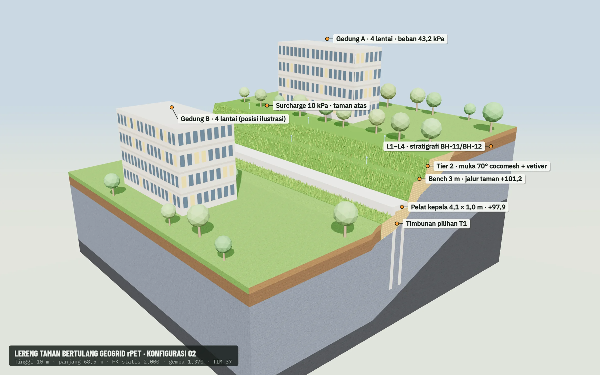
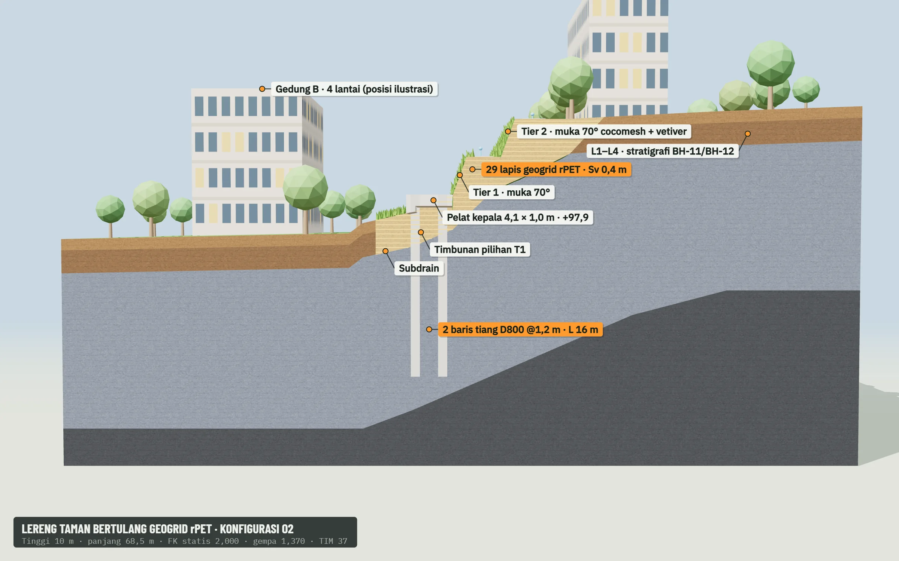
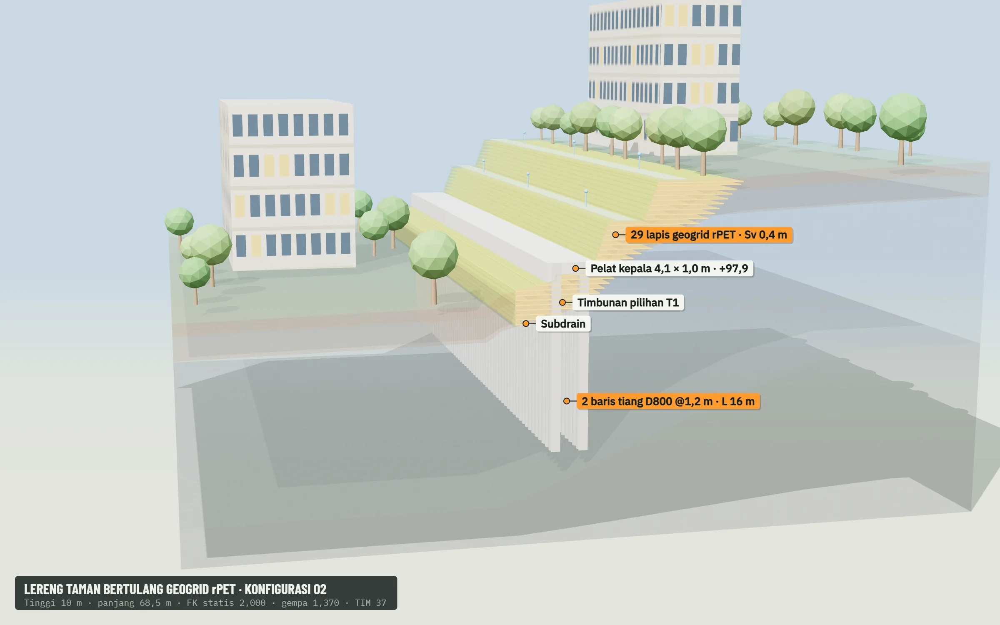
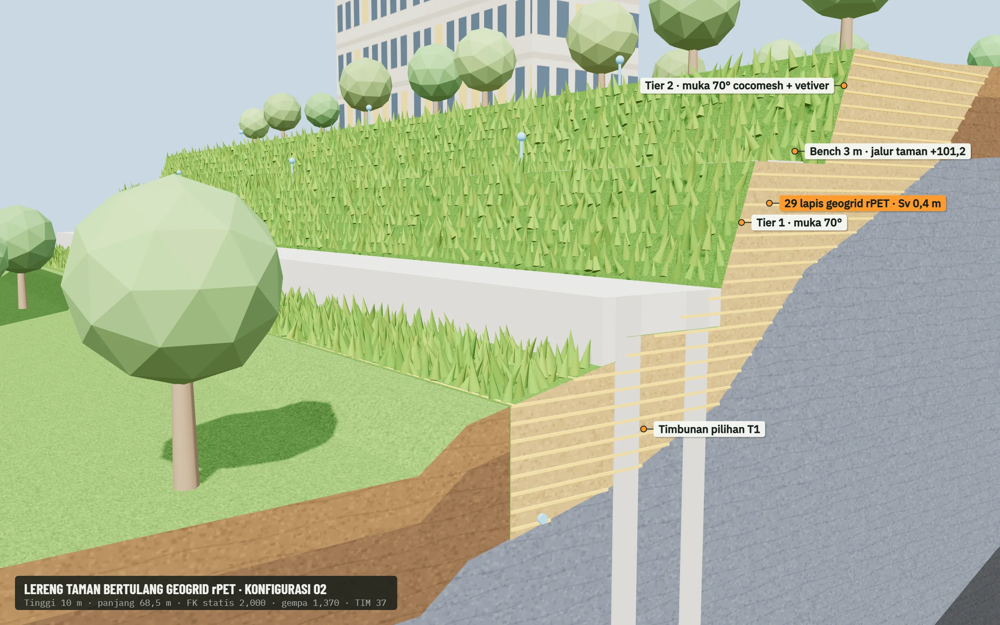
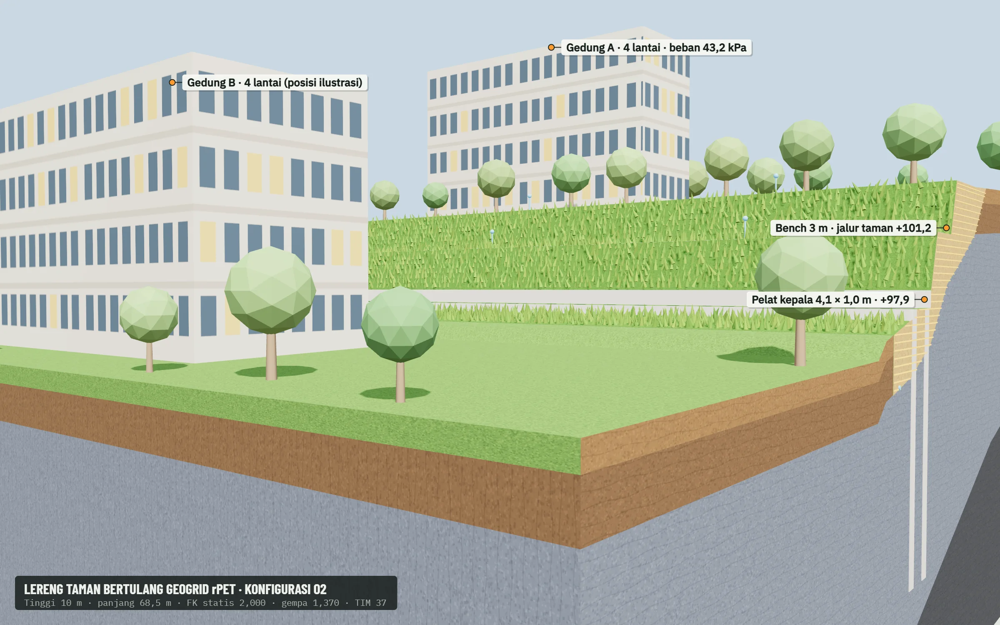
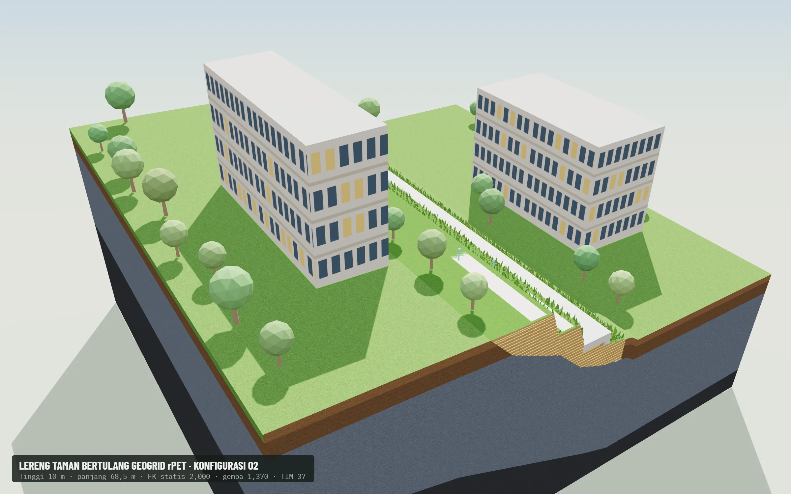

Lereng taman bertulang geogrid rPET setinggi 10 m di atas clay shale
Proposal desain perkuatan lereng berbasis geosintetik ramah lingkungan yang juga menjadi taman: analisis stabilitas, lereng bertulang geogrid rPET dua tier, dua baris tiang bor, drainase, pemantauan, RAB, jadwal, DED, dan model 3D interaktif.
- Acara atau tempat
- Lomba desain geoteknik tingkat nasional, tahap penyisihan
- Tahun
- 2026
- Peran saya
- Anggota tim.
- Hasil
- FK global statis 2,000 dan gempa 1,370 (SSAP2010); proposal 79 halaman + DED 12 lembar + model 3D
- Perangkat lunak
- SSAP2010, FLAC/Slope, LibreCAD, Microsoft Excel, Python, Three.js
- Jenis
- Lomba, Perhitungan, Pemodelan, Gambar/DED
Masalah
Lereng setinggi 10 m di antara dua gedung 4 lantai berdiri di atas clay shale yang lapuk bila basah-kering. Faktor keamanan lereng asli 0,74-1,46 (SSAP2010), di bawah syarat SNI 8460:2017, sehingga perkuatan wajib dan Gedung A di puncak harus tetap aman.
Yang dikerjakan
- Analisis stabilitas lereng asli dan lereng yang diperkuat dengan dua perangkat lunak (FLAC/Slope dan SSAP2010), ditambah pembanding Bishop di Python.
- Desain lereng bertulang 29 lapis geogrid rPET (Sv 0,4 m), muka 70° dibungkus cocomesh + vetiver, bench 3 m sebagai jalur taman.
- Defisit tahanan ditutup dua baris tiang bor D800 @1,2 m (L 16 m) dengan pelat kepala; cek struktur tiang dan stabilitas muka.
- Subdrain, piezometer dengan ambang peringatan, volume, RAB, metode konstruksi, dan jadwal di Excel yang dibangun dengan skrip.
- Gambar DED 12 lembar A3, lalu model 3D interaktif dan render dari geometri final SSAP2010 (Three.js).
Hasil
| Geometri | Kaki +94,5, puncak +104,5, panjang DPT 68,5 m, dua tier muka 70° |
|---|---|
| Perkuatan | 29 lapis geogrid rPET, Sv 0,4 m, timbunan pilihan dari quarry |
| Tiang | 2 baris tiang bor D800 @1,2 m, L 16 m, pelat kepala 4,1 × 1,0 m |
| FK global | Statis 2,000; gempa kh 0,195 1,370; sensitivitas kh 0,275 1,217; beban Gedung A 2,011 |
Gambar dan video












Berkas dan tautan
Model 3D dibangun langsung dari koordinat model SSAP2010 tanpa pembesaran vertikal. Posisi Gedung B, pohon, dan titik piezometer di model bersifat ilustrasi.